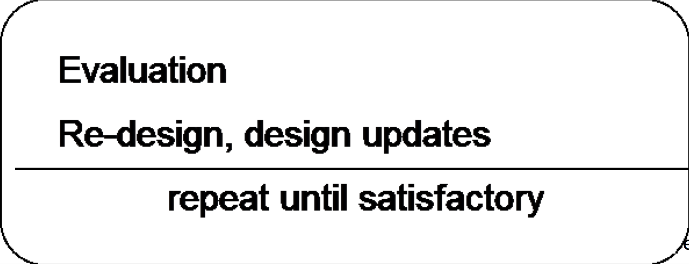

Objective:
Design and implementation of a real-world application, with special focus on UI design.
The UI to your application is the important part of this project. It should apply suitable design guidelines and principles you learned in class.
Steps:
Grading Dimensions:Product idea
Domain analysis:
- user analysis
- task analysis
→ problem scenario
Prototyping
- sketches, mockups
- definition of specific user task sequences (use cases)

Final Implementation
If you have trouble coming up with a project idea of your own, feel free to use and extend this Project Possibility.